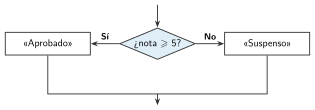

Estructuras de decisión
🤔 Pienso5 min
Qué hago aquí: Piensa un momento y contesta con lo que ya sabes. No pasa nada si no lo sabes: es para empezar.
Completa: Si llueve, . Si no, .
📖 Leo y aprendo15 min
Qué hago aquí: Lee despacio, mira los dibujos y los ejemplos, y quédate con la idea clave del final.
Con una estructura de decisión el programa mira una condición y elige qué hacer . Es el rombo del diagrama de flujo.

✏️ Hago25 min
Qué hago aquí: Haz las actividades en orden. Empieza siempre por las básicas.
Completa la decisión de una farola: si hay poca luz, ; si no, .
Une cada tipo de decisión con su ejemplo.
| Simple • | • Si llueve, paraguas; si no, gorra. |
| Doble • | • Si hay pared, pararse. |
| Múltiple • | • Si nota ≥ 9…; si no, si nota ≥ 7…; si no… |
Programa en App Lab «¿Aprobado o suspenso?». Pruébalo con 4, 5 y 7.
¿Qué escribe el programa si la temperatura es 30? Si temperatura > 25, «Calor»; si no, «Fresco».
Haz que la etiqueta se ponga verde si está aprobado y roja si no. Explica qué bloques has añadido.
✏️ Puedes responder escribiendo, con un dibujo o un esquema, o contándolo en voz alta.
🚀 Amplío (si quieres saber más)
Qué hago aquí: ¿Has terminado? Lee la curiosidad o elige el reto. Es voluntario.
Haz una pantalla de contraseña. Solo si el usuario y la contraseña son correctos (usa «y»), muestra «Bienvenido». Si no, «Datos incorrectos».
✅ Compruebo5 min
Qué hago aquí: Contesta sin mirar la ficha y marca cómo lo llevas.